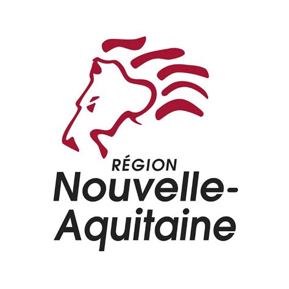
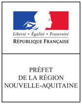
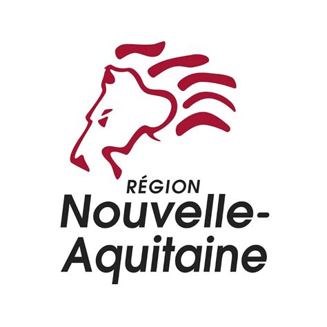
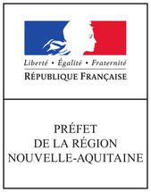
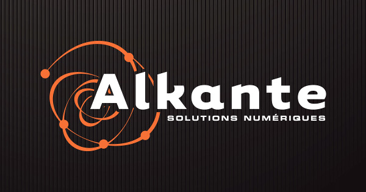
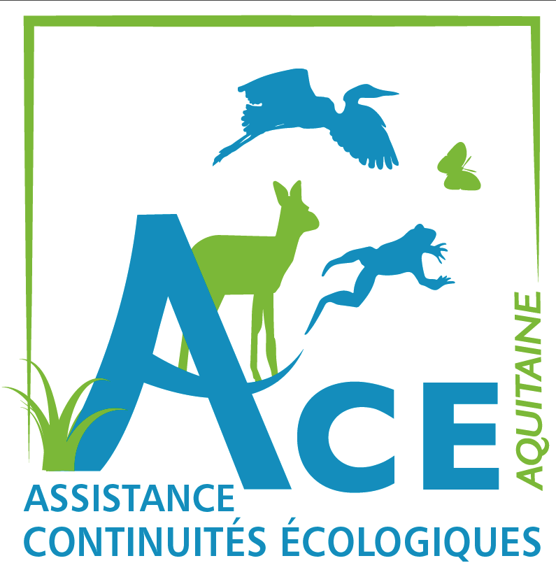
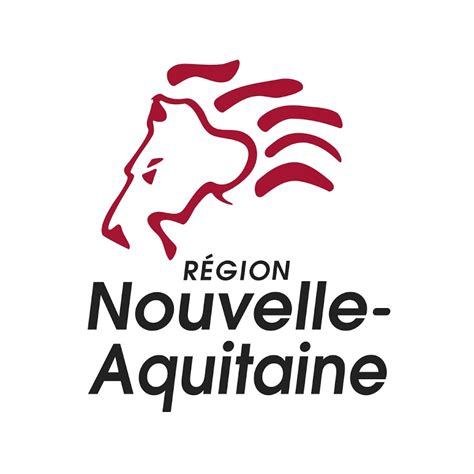
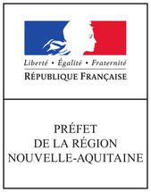
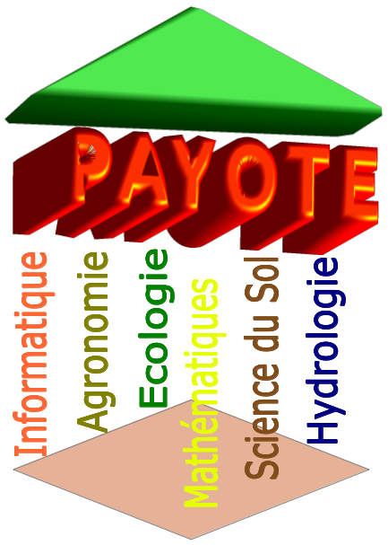

Développement/Support
le logiciel Chloe est développé et maintenu par Hugues Boussard, BAGAP, SAD, INRA, France.
Il a été conçu par Jacques Baudry et Hugues Boussard
Le développement du plugin QGIS "Chloe - métriques paysagères" a été réalisé par la société ALKANTE.

lien vers le logiciel INRA Chloe et sa documentation
code source du plugin QGIS "Chloe - métriques paysagères" sur github
Partenaires :
La mise en plugin sous QGIS de "Chloe- métriques paysagères" a été soutenue financièrement par l'ACE Nouvelle Aquitaine, l'UR C.A.U.E Nouvelle-Aquitaine, la Région Nouvelle Aquitaine et sa préfecture et l'Europe.
Merci en particulier à Yannick Coulaud.



Cadre conceptuel :
Le logiciel Chloe est partie intégrante de la librairie APILand et est murie conceptuellement par le réseau de recherche INRA PAYOTE sur la modélisation des paysages et des territories agricoles et de leurs processus environnementaux.
